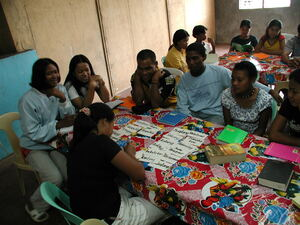

punduk 
/punduk/
v_rt.
“divide_up”
n.
a group
Wrd.Gloss: group
Eng. group
Online dict status: -
Usage level: L
v.
for someone (egpunduk, migpunduk/impunduk, agent, eg><ø-) to group people (egpunduken, impunduk/migpunduk/pigpunduk, patient, eg><en-)
Eng. group, to
Online dict status: -
Usage level: L
v.
for a crowd of people (egpunduk-punduk, migpunduk-punduk, impunduk-punduk, eg><ø-) to group togetherto sit in groups. e.g. the Panganan people all together in one place and the Digungan people together in another group
Egpunduk- punduk ka langun ne me matigsalug te timpu te aldew te me matigsalug.
All Matigsalug people gather together during, matigsalug festival.
Eng. group together, to
Online dict status: -
Usage level: L
v.
for someone (egpamunduk, migpamunduk/impamunduk, agent, eg><ø-paN-) to divide a slaughtered animal into portions (by size not by weight) (egpamunduken, impamunduk/migpamunduk/pigpamunduk, eg><en-paN-)
Eng. divide
Online dict status: -
Usage level: L
adj.
(sengepunduk) one group
Sengepunduk dè iya ka me batè ne mig-uyun te puhawang ku.
Only one group was agreed with my idea.
Eng. a group; one group
Online dict status: -
Usage level: L
v.
for someone (egpapunduk-punduk, migpapunduk-punduk, impapunduk-punduk, agent, eg><ø-pA-) to request or ask people to group together (egpapunduk-punduken, impapunduk-punduk/migpapunduk-punduk/pigpapunduk-punduk, patient, eg><en-pA-)
Eng. request or ask, to (group together)
Online dict status: -
Usage level: L
Updated by: RJH,AAA,QDL,QDL
Last updated: 20/Aug/2010
This page last updated: 28-Dec-2019
Copyright © 2009-2014, Matigsalug Language Christian Association, Inc